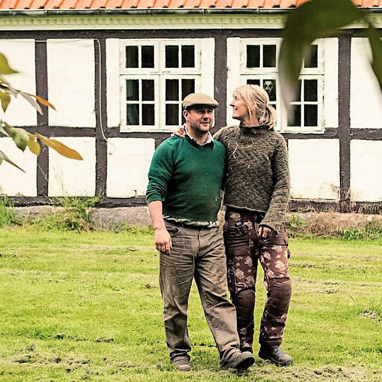
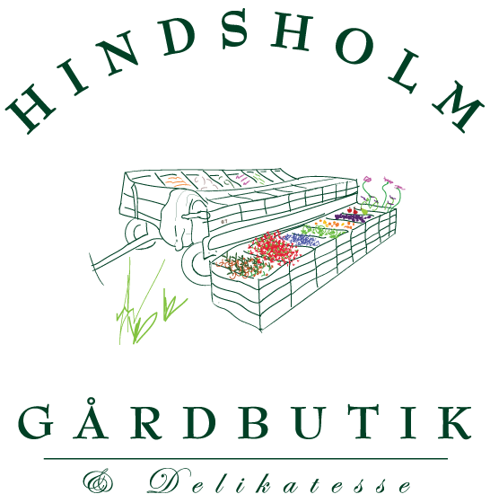

Stålbækgård
Stålbækgård startede i 2013 som et lille, alsidigt landbrug. Vores egen metode til at måle og neutralisere gårdens CO2-aftryk blev senere grundlaget for beregningsværktøjet Your Footprint. Nu tager vi næste skridt: fra CO2-neutral til 100% kulstofoptagende — en gård bygget op omkring skovlandbrug, med frugt og grønt som vores primære produktion.

Fra minilandbrug til kulstofoptagende landbrug
Stammen er det, der holder resten sammen — her er historien, i rækkefølge.
Drømmen om et alsidigt landbrug
Stålbækgård overtages på Hindsholm med drømmen om et lille, alsidigt landbrug — plads til dyr, afgrøder og en gårdbutik under samme tag.
Danmarks første CO2e-neutrale landbrug
Gården udvikler sin egen model for at måle og neutralisere sit CO2-aftryk. Modellen bliver siden grundlaget for CO2e-beregningsværktøjet Your Footprint.
Tilføj certificeringsår og -organMod 100% kulstofoptagelse
Næste skridt i rejsen: fra neutral til aktivt kulstofoptagende. Husdyrhold afvikles til fordel for skovlandbrug, hvor frugt, bær og grønt bliver kernen i produktionen — under navnet Hindsholm Gårdbutik ud mod kunderne.


Louise & Benjamin, StålbækgårdTo grene af samme stamme
Stålbækgård er gården og virksomheden bag begge. Sådan møder du os.


Hindsholm Gårdbutik
Den kundevendte side af Stålbækgård — vejboden og gårdbutikken, hvor du møder gårdens frugt, bær og grønt direkte fra marken.
Besøg butikken →Your Footprint
Modellen, vi selv udviklede til at regne på gårdens CO2-aftryk, er videreudviklet til Your Footprint — et CO2e-beregningsværktøj til landbruget.
Se yourfootprint.uk →Et kulstofoptagende landbrug
Vi bevæger os væk fra husdyrhold og hen imod skovlandbrug — træer, buske og afgrøder dyrket sammen i lag, ligesom i en naturlig skov.

Trærækker & læhegn
Tilføj detaljer om hvilke træarter og hvor mange rækker.
Flerlags dyrkning
Tilføj detaljer om hvilke lag (kron-, busk- og bundlag) I dyrker.
Permanent jorddække
Tilføj detaljer om jordbearbejdning og dækafgrøder.
Frugt & grønt som hovedproduktion
Kirsebær, ribs og solbær sælges allerede fra Hindsholm Gårdbutik.
Beviset er i jorden
Vi praler ikke — vi dokumenterer. Gårdens autorisation og CO2e-regnskab er offentligt tilgængelige.
- Økologisk autorisationNr. 1107649
- GHG-regnskabghg.pdf →
- Fuld rapportreport.pdf →
- Kulstofmodelyourfootprint.uk →
- Fødevaresmileyfindsmiley.dk →